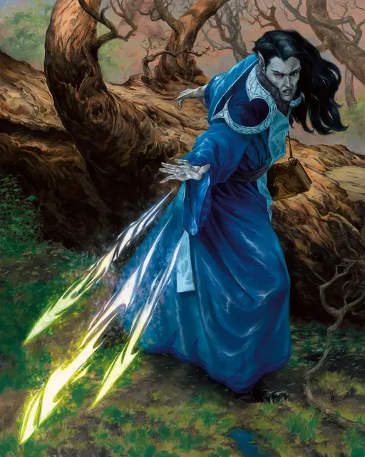

Волшебная стрела
Magic Missile
1 уровень, Воплощение

Время сотворения 1 действие
Дистанция 120 футов
Компоненты В, С
Длительность Мгновенная
Классы Волшебник, Чародей
Подклассы домен магии (жрец), бронник (изобретатель)
Вы создаете три светящихся дротика из магической силы. Каждый дротик попадает в существо на ваш выбор, видимое в пределах дистанции. Каждый дротик причиняет 1к4 + 1 урона силовым полем. Все дротики поражают одновременно, и вы можете направить их как в одно существо, так и в разных.
На больших уровнях. Если вы накладываете это заклинание, используя ячейку 2-го уровня или выше, заклинание создает по одному дополнительному дротику за каждый уровень ячейки выше первого.